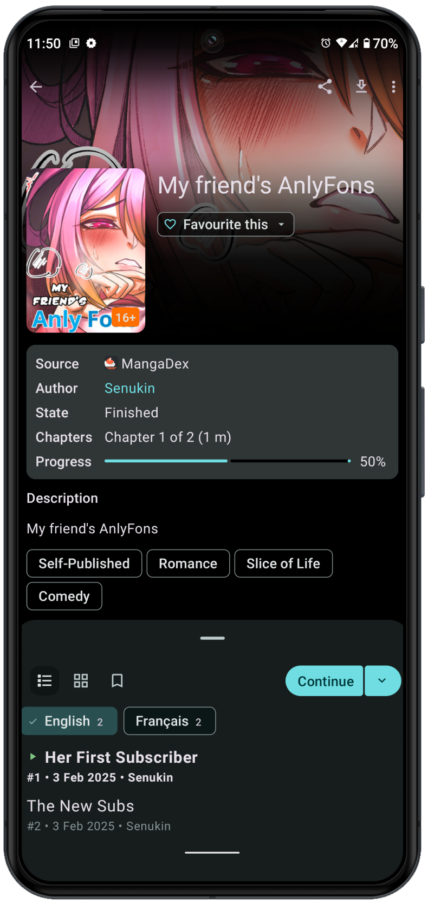

Usagi 用了三个月才发现的 4 个坑——换手机差点丢光订阅列表
Usagi 看着就是个开源阅读器，上手简单但新手很容易踩几个隐形坑：图源搜不到、备份没开、下载占满存储、手势乱跳——过来人教你提前避开。
Usagi 这东西——它的Usagi官网上说是一个开源漫画阅读器——装完打开界面干干净净，点两下就能搜、就能看，第一次用时我感叹"这比某付费阅读器清爽多了"。结果三个月下来翻了车——换手机那天才发现订阅列表一条都没存住，之前下的漫画全在旧手机存储里找不回来。痛定思痛之后总结了几个真实踩过的坑，写下来给刚上手的人提个醒。
坑一：装完搜不到任何图源，以为软件坏了
症状：打开 Usagi 点"图源管理"，列表是空的，搜漫画永远显示"暂无结果"。
原因：Usagi 本体只带了一个最基础的图源管理框架，第三方图源仓库的开关默认是关的。很多人第一次装完以为软件自带一堆图源，实际上你得先去设置里把"允许第三方图源仓库"打开，然后手动添加几个图源地址才能真正用起来。我第一次遇到这个情况时还以为下载了残缺包，跑去重新下了一遍，白折腾。
解法：进设置 → 找"图源"分类 → 把"允许第三方图源仓库"那栏勾上，然后回到图源管理页添加社区维护的图源仓库。注意图源地址是随时在变的，如果某个仓库打不开，去它的Usagi文档查一下最新的图源仓库地址替换就行。

坑二：没开自动备份，换手机时订阅全丢
症状：新手机装好 Usagi，登录同一个账号，收藏夹、浏览历史、下载进度全部归零，仿佛从来没用过。
原因：Usagi 的账号同步只覆盖很少一部分数据——主要是阅读进度和书签，但订阅列表、自定义图源地址、下载路径偏好这些全是本地数据，不会自动跟账号走。我当时换手机前完全没意识到这点，新手机登进去一看干净得像张白纸，差点从沙发上摔下来。
解法：设置里有个"备份与恢复"分类，第一次装好就应该手动点一次"创建备份"生成一个备份文件，然后把"自动备份"开关打开——它会按你设定的频率自动把本地数据打包存一份。换新设备时先把旧备份文件导过去，再装 Usagi，一切设置和订阅就都回来了。这个备份文件不大，建议顺手丢进网盘或者本地云端同步目录里，防止本地也丢。
坑三：下载存储路径设在内部存储，半年后手机爆内存
症状：手机用了一阵之后弹出"存储空间不足"，打开存储管理一看，内部存储被占了好几个 G，但 Usagi 里点下载列表又看不清具体占了多少。
原因：Usagi 的下载默认存到应用的内部存储目录，这个目录对很多手机的文件管理器来说是隐藏的，你能在 Usagi 里看到下载的漫画，但看不到它们实际占了多少空间。而且下载完成后如果你忘了手动清理，旧的漫画就一直堆在那里，越积越多。并发下载数默认也是 3，开着 Wi-Fi 的时候它会一股脑往里塞。
解法：安装包直接从下载拿就行，别随便逛论坛找第三方修改版。进设置 → "下载"分类 → 把存储路径改到外部 SD 卡或者手机的公共下载目录，这样你用文件管理器就能直接看到和删除旧文件。并发下载数建议调到 2 以内，Wi-Fi 下批量追更时也不容易把存储打满。另外养成定期清理的习惯——看完的漫画直接在下载列表里删，别留着。
坑四：阅读器手势和系统手势冲突，翻页翻不动还误触亮度
症状：在阅读器里点屏幕想翻页，结果要么翻不动，要么突然弹出系统的"返回桌面"手势，或者翻页时亮度莫名被调暗调亮。
原因：Usagi 阅读器的手势默认开启了左侧上下滑动调节亮度、右侧上下滑动翻页的功能，这两套手势和部分安卓系统的边缘返回手势会打架。加上双指捏合缩放、点击面板显示这些手势全是默认开的，第一次读的时候手忙脚乱，经常该翻页的时候调了亮度，该唤面板的时候退回桌面了。
解法：设置 → "阅读"分类里把手势逐个过一遍。我个人建议关掉"左侧滑动调亮度"和"右侧滑动翻页"这两个——保留点击翻页和双指缩放就够用了，亮度直接点控制面板调，虽然多一步但不会误触。翻页方向也确认一下是不是你习惯的"右到左"（大多数漫画的习惯方向），有些默认是左到右，看着别扭。

防坑清单
- 装完先开图源开关：第三方图源仓库默认关闭，不勾上搜不到任何内容
- 首次启动就做备份：本地数据不会跟账号同步，先手动创建一份，再开自动备份
- 下载路径改外部存储：默认内部存储藏得深，半年下来悄悄占满几个 G
- 手势别全开：只留必要的点击翻页和双指缩放，关掉边缘滑动防误触
- 订阅时注意图源来源：不同图源的漫画清晰度和更新频率差很多，别订阅了才发现是低清源
知道这些坑之后，Usagi 其实相当省心——开源、干净、没有广告，配置好之后就是个安安静静的阅读工具。源码和配套资料在GitHub、Gitee、GitCode三个仓库都有同步，国内用户直接 Gitee 或 GitCode 访问会快很多。希望这篇能帮到刚入坑的朋友，别像我一样换手机时才拍大腿。